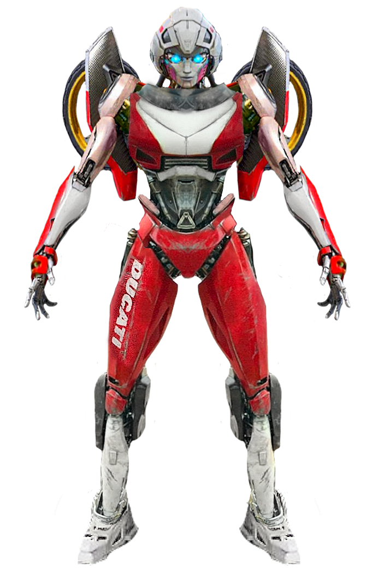
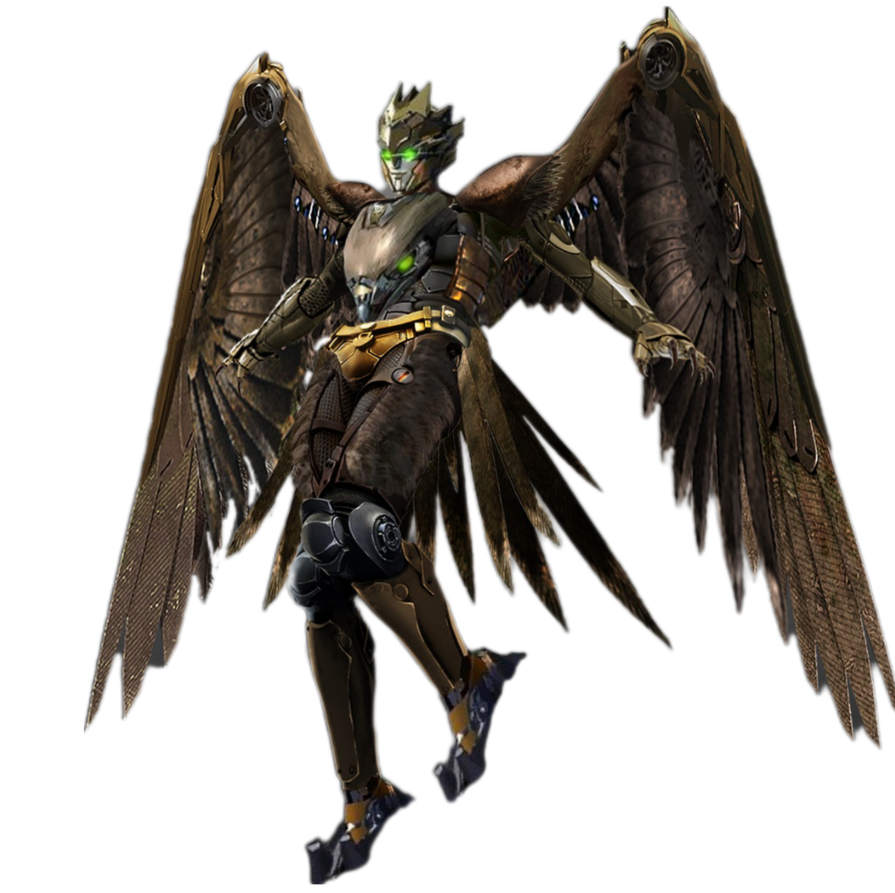

| Personaggio |
Descrizione |
Immagine |
| Optimus Prime |
Doppiato Peter Cullen
Optimus è meno fiducioso verso gli umani. All’inizio del film fatica ad accettare la collaborazione
con Noah Diaz e mostra un lato più rigido.
Guida gli Autobot con fermezza, mantenendo sempre la priorità sulla missione e sulla sopravvivenza della sua squadra.
Si transforma in un Freightliner FLA del 1987. È equipaggiato con Spade di energon e cannoni integrati sulle braccia
e un'ascia di energon una delle sue armi più iconiche. |
 |
| Bumblebee |
Continua a comunicare tramite la sua radio e frammenti di canzoni o clip cinematografiche, a causa del danno subito alle sue corde vocali nei film precede
Nonostante non sia il protagonista umano-centrico, rimane il cuore emotivo del gruppo Autobot e un guerriero valoroso sempre pronto a sacrificarsi per i suoi compagni.
Si transforma in una Chevrolet Camaro del 1977, lo stesso modello con cui ha debuttato nel film del 2007 ma con delle modifiche per adattarlo al film.
È equipaggiato con una maschera da battaglia e cannoni integrati sulle braccia. |
 |
| Mirage |
Doppiato Pete Davidson.
Mirage ha un carattere da adolescente ribelle, carismatico e ama infrangere le regole.
Mirage può generare ologrammi realistici di se stesso per confondere i nemici durante gli inseguimenti o i combattimenti.
È anche in grado di cambiare forma in diversi veicoli, sebbene mantenga una preferenza per la sua modalità in una Porsche 911 Carrera RS 3.8 (serie 964) del 1993,
di colore argento con strisce blu.
Oltre ai suoi ologrammi per combattere usa i suoi cannoni impulsi. |
 |
| Arcee |
Doppiata da Liza Koshy.
Ha una personalità grintosa e un po' maschiaccia. Non mancano momenti di sarcasmo, come quando provoca i nemici.
È una soldatessa forte e coraggiosa ma e anche molto sensibile e soffre della morte dei suoi compagni.
Si transforma in una ducati 916 del 1994.
In combattimento utilizza le ruote della sua modalità veicolo integrate nei piedi come pattini, permettendole di scivolare
velocemente sul terreno mentre spara con i suoi blaster. |
 |
| Wheeljack |
Doppiato da Cristo Fernández.
Viene descritto come un inventore colto e un po' goffo.
Vive in Perù da tempo, dove ha sviluppato un forte legame con la natura e un atteggiamento più calmo e introspettivo rispetto agli altri Autobot bellicosi.
Si trasforma in un Volkswagen Type 2 del 1970 e combatte con cannoni equipaggiati sulle braccia. |
 |
| Personaggio |
Descrizione |
Immagine |
| Optimus Primal |
Doppiato da Ron Perlman.
Primal è un leader millenario che ha vissuto nell'ombra sulla Terra per secoli. È più calmo e riflessivo rispetto a Optimus Prime,
agendo come una guida spirituale e tattica. Il suo unico obiettivo è proteggere tutta la vita organica dalla minaccia di Unicron.
È disposto al sacrificio estremo per impedire che il "Divoratore di Mondi" raggiunga il nostro pianeta.
Si transforma in un gorilla "tecnorganico". La sua arma principale sono due enormi scimitarre che possono essere collegate per
formare una doppia lama rotante, simile a un'arma a bastone. |
 |
| Airazor |
Doppiata da Michelle Yeoh.
È descritta come l'anima del gruppo, dotata di una natura protettiva e saggia. Agisce spesso come mediatrice e guida,
come dimostrato quando accoglie gli Autobot in Perù. Si transforma in un falco pellegrino meccanico capace di sputare fuoco dalla bocca
e usare i suoi artigli per combattere. |
 |
| Rhinox |
A differenza della serie animata degli anni '90 (Beast Wars), dove era anche lo scienziato e l'esperto di tecnologia del gruppo,
in questo film è ritratto principalmente come un guerriero stoico. Parla pochissimo, lasciando che siano le sue azioni a comunicare
la sua lealtà a Optimus Primal.
Si trasforma in un gigantesco rinoceronte corazzato.
È considerato il membro fisicamente più forte dei Maximal. In forma robotica, brandisce un'enorme mazza ferrata a doppia testa. |
 |
| Cheetor |
Cheetor è il membro più giovane e audace dei Maximal. È caratterizzato da un atteggiamento coraggioso, a tratti spericolato,
e da una fiducia incrollabile nelle proprie capacità fisiche. Nutre un rispetto profondo per Optimus Primal ed è il primo a lanciarsi nella mischia quando
i suoi compagni sono in pericolo. In forma robotica, combatte con uno stile simile a quello di un ninja o di un artista marziale, utilizzando la sua velocità
per colpire e sparire. Si trasforma in un ghepardo meccanico di dimensioni enormi. La sua arma principale è una lancia tecnologica che può essere divisa in
due lame corte o unita per combattimenti a raggio più ampio |
 |
| Personaggio |
Descrizione |
Immagine |
| Scourge |
doppiato in da Peter Dinklage.
Scourge è il leader dei Terrorcon e il servitore più potente di Unicron. Agisce come un cacciatore di trofei intergalattico che viaggia per l'universo consumando mondi per il suo padrone.
Viene inviato sulla Terra per recuperare la Chiave di Transcurvatura dai Maximal, necessaria a Unicron per spostarsi istantaneamente tra le galassie.
Una sua caratteristica distintiva è l'abitudine di strappare gli emblemi (insignia) dalle sue vittime sconfitte per saldarli sulla propria armatura e sulla calandra del suo veicolo.
Sul suo corpo appaiono loghi di Autobot, Decepticon, Maximal e altre fazioni come i Wrecker.
Si trasforma in un camion Peterbilt 359 annerito e pesantemente modificato, con uno stile post-apocalittico.
È dotato di un braccio sinistro trasformabile in un potente cannone a energia e in una morsa artigliata, mentre il destro nasconde una lama retrattile.
|
 |
| Nightbird |
Doppiato da Michaela Jaé Rodriguez.
Nightbird agisce come l'esperta ninja e cacciatrice del gruppo guidato da Scourge. È descritta come un'avversaria fredda, letale e arrogante, che disprezza i nemici meno abili.
Si trasforma in una Nissan Skyline GT-R R33 del 1995, personalizzata con un kit estetico aggressivo, cerchi viola e una carrozzeria grigio scuro/nero.
Una delle sue abilità distintive è la capacità di volare grazie a propulsori a razzo e "ali" estraibili, che usa per colpire i nemici dall'alto.
Combatte principalmente con due katane elettrificate e possiede un'elevata agilità nel combattimento corpo a corpo. |
 |
| Battletrap |
Doppiato da David Sobolov.
Battletrap funge da specialista del combattimento pesante e addetto al recupero. Rispetto alla freddezza di Nightbird, Battletrap è descritto come un guerriero
che trae un piacere sadico dal caos e dalla distruzione, godendo del "brivido della caccia". Come gli altri Terrorcon, è potenziato dall'energia oscura di Unicron,
che lo rende estremamente resistente e fisicamente più forte della media degli Autobot.
Si trasforma in un carro attrezzi GMC TopKick C7000 degli anni '80, di colore arancione e nero, con un aspetto rugginoso e post-apocalittico.
La sua arma principale è una massiccia palla da demolizione chiodata che usa per sbaragliare i nemici a media distanza. È inoltre dotato di lanciarazzi montati sulle spalle e di una forza bruta devastante. |
 |